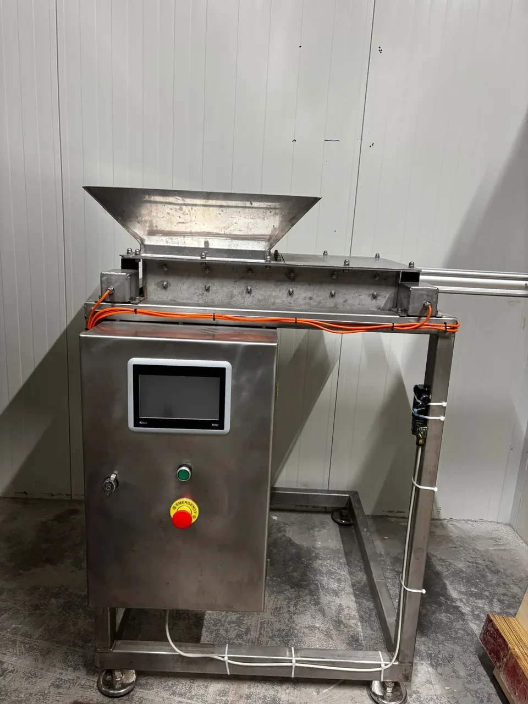
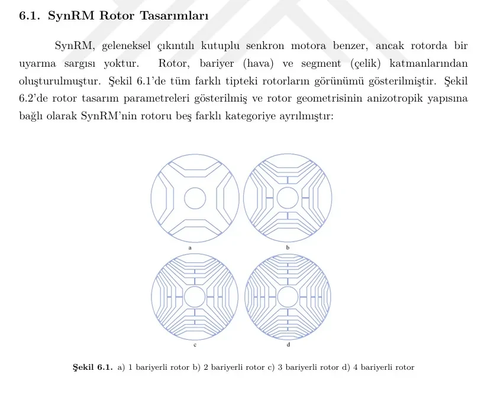
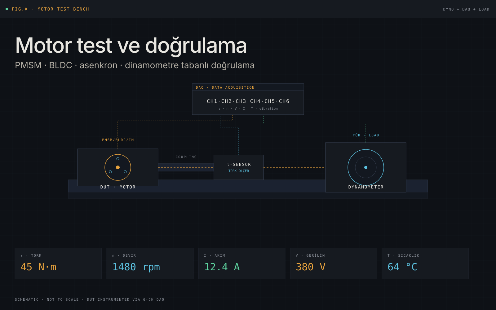

Üretim sahasına yakın çalışma
Arızayı yalnızca komponent seviyesinde değil; operatör kullanımı, kontrol mantığı ve saha koşullarıyla birlikte ele alıyorum.
Bakım ve onarım, saha otomasyonu, devreye alma ve motor test süreçlerinde problemi sahadan okuyup kontrol, ölçüm ve uygulama tarafını birlikte yönetiyorum. Odağım, üretimde çalışan çözüm kurmak ve teknik sonucu açık biçimde göstermek.
Ana görünür eksen bakım ve otomasyon. Motor test deneyimi ölçüm ve doğrulama disiplinini, tez çalışması ise teknik derinliği ve analitik güveni güçlendiriyor.
Arızayı yalnızca komponent seviyesinde değil; operatör kullanımı, kontrol mantığı ve saha koşullarıyla birlikte ele alıyorum.
Test sonucu, gözlem ve teknik veriyi raporlanabilir mühendislik çıktısına dönüştürmeye odaklanıyorum.
Tez ve laboratuvar geçmişi, saha problemine yalnızca bakım değil analiz perspektifiyle de yaklaşmamı sağlıyor.
İki üretim hattına entegre edilen, PLC kontrollü ve sahada aktif kullanılan hopper terazisi otomasyonu.
Detay sayfası
Çamaşır makinesi uygulamaları için geliştirilen mıknatıssız senkron relüktans motor tasarımında, rotor bariyeri geometrilerinin performansa etkisini inceleyen yüksek lisans çalışması.
Detay sayfası
Test standı kullanımı, prosedür hazırlığı, ölçüm alma ve performans yorumlama üzerine kurulu motor doğrulama deneyimi.
Detay sayfası
Çalışma; farklı rotor bariyeri geometrilerinin moment, dalgalanma ve manyetik akı davranışı üzerindeki etkisini Ansys Maxwell ile karşılaştırıyor. Sonuçlar, çamaşır makinesi uygulaması bağlamında teknik karar üretmeye dönük okunuyor.
Üretim sahasında bakım, onarım ve devreye alma süreçlerinde aktif rol; PLC tabanlı kontrol ihtiyaçları, sensör/valf/saha ekipmanı problemleri ve hopper terazisi gibi saha uygulamaları üzerinde çalışıyorum.
PMSM, BLDC, asenkron ve dalgıç pompa motorlarının test süreçlerinde görev. Test standı hazırlığı, prosedür takibi, ölçüm alma ve performans yorumu.
Çamaşır makinesi motorlarının tasarım, üretim ve test süreçlerinde staj. Üretim hattı ile ürün geliştirme arasındaki ilişkiyi saha içinde gözlem.
KARSU elektrikli atık toplama aracı projesinde tasarım ve montaj çalışmalarına katılım.
SynRM rotor mimarileri ve elektromanyetik performans karşılaştırmalarına odaklanan tez çalışması tamamlandı.
Mekanik, kontrol, elektronik ve üretim bileşenlerini aynı mühendislik zemini içinde birleştiren temel eğitim.
Ansys Electronics Suite (Maxwell), MATLAB / Simulink ve literatür tabanlı karşılaştırmalar.
SolidWorks, Motor-CAD bilgisi ve elektromekanik bileşen ilişkisini okuyan yaklaşım.
Fatek PLC, pano kurgusu, operatör paneli ve saha bağlantı bileşenleri.
Test prosedürü, ölçüm toplama, sonuç yorumu ve teknik raporlama disiplini.
Bakım ve otomasyon, motor doğrulama veya elektromanyetik analiz konularında teknik görüşmeler için yazabilirsiniz.